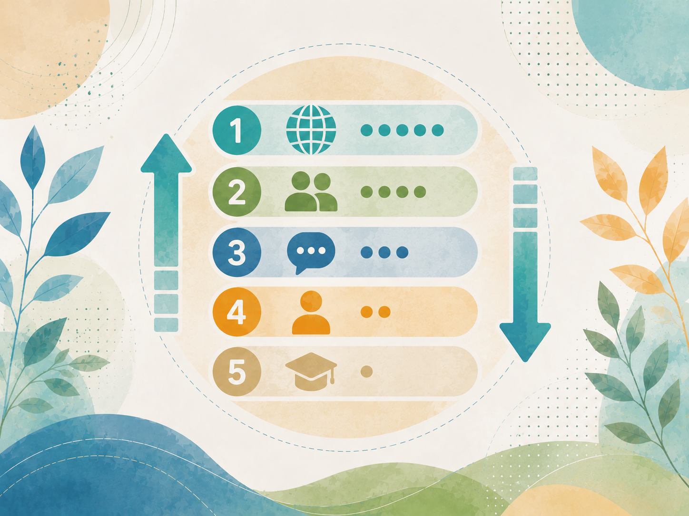

Resultats i recursos
Aquest espai recull les pàgines publicades pel GID. Pots filtrar-les per tipus de material.

Mapa de necessitats, anàlisi de punts forts i febles (DAFO), i principis del model COIL a la UAB
Síntesi visual dels resultats de la primera trobada del GID COIL@UAB.
Experiències docents internacionals a la UAB
Informe d’anàlisi de les 80 respostes: experiència existent, potencial COIL, necessitats i implicacions per al GID.
COIL@UAB · Butlletí #1
Presentació, fites, resultats i propers passos del GID.

Mapeig d’experiències docents internacionals
Priorització i fitxes internes de les experiències amb més elements propers al COIL.